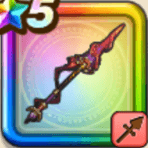

ブレアの炎槍
攻略班 8.0点 / あしばらいじごくのはどう煉獄さみだれ突き哀・燦々不滅の怨炎かばねの機先
くわしい特徴
【レベル別習得スキル】 Lv1【ゴドハン】攻撃力+5 Lv10あしばらい（消費MP：4）敵1体に威力120%の体技ダメージを与えたまに転ばせる Lv15じごくのはどう（消費MP：30）敵全体に自身の職業レベルに応じた威力の体技ダメージを与え、まれに怯えさせる Lv20煉獄さみだれ突き（消費MP：32）ランダムな敵にゾンビ系なら威力150%、それ以外には威力110%のメラ属性斬撃ダメージを4回与える Lv30哀・燦々（消費MP：55）敵全体に威力490%のメラ属性斬撃ダメージを与え、HPが15%以下になった敵を消し去る(一部をのぞく) Lv35ゾンビ系へのダメージ+5% Lv40ゾンビ系へのダメージ+5% Lv45攻撃力+12 Lv50不滅の怨炎（消費MP：最大MPの2%）戦闘開始時に敵全体をたまにゾンビ化する(ゾンビ化：系統をゾンビ系にし、メラ・ギラ・イオ属性の耐性を下げ、消滅効果のHP条件を緩和) Lv50かばねの機先（消費MP：3）戦闘開始時に自身のすばやさをかなり上げる(効果2ターン) 【限界突破スキル】 1凸スキルの斬撃・体技ダメージ+7% 2凸スキルの斬撃・体技ダメージ+7% 3凸スキルの斬撃・体技ダメージ+7% 4凸スキルの斬撃・体技ダメージ+7%